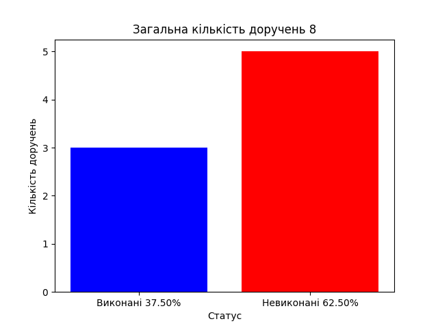

{% extends 'base.html' %}

{% block title %}
    Контроль виконання доручень
{% endblock %}

{% block header %}
    <div class="titl">
        Контроль виконання доручень
    </div>
    <div class="subtitl">
        <form method="GET" class="filter-form">
            <input type="text" name="q" placeholder="Пошук..." class="search-input">
            <select name="status" class="status-select">
                <option value="">Всі</option>
                <option value="To Do" {% if request.GET.status == 'To Do' %}selected{% endif %}>To Do</option>
                <option value="Done" {% if request.GET.status == 'Done' %}selected{% endif %}>Done</option>
            </select>
            <button type="submit" class="submit-button">Пошук</button>
            <button type="submit" name="action" value="generate_chart" class="generate-chart-button">Створити графік</button>
            {% if query or chart_generated or status %}
                <a href="{% url 'home' %}">Очистити</a>
            {% endif %}
        </form>
    </div>
{% endblock %}

{% block content %}
    <div class="list_tasks">
        <ul class="task-list">
        {% for task in tasks %}
            <li class="task-item {% if task.status == 'Done' %}completed{% endif %}" >
                <h3>{{ task.title }}</h3>
                <p>{{ task.description }}
                (<a href="{% url 'delete_task' task.id %}">видалити</a>)
                    (<a href="{% url 'edit_task' task.id %}">редагувати</a>)</p>
                Статус: {{ task.status }}
                {% if task.status == 'To Do' %} ⏳ {% else %} ✔ {% endif %}
                (<a href="{% url 'change_status' task.id %}">змінити статус</a>)
            </li>
        {% endfor %}
        </ul>
        <div class="add_tasks">
            <a href="{% url 'add_task' %}">Додати доручення</a>
        </div>
    </div>
    <div class="chart">
        {% if chart_generated %}
            
        {% endif %}
    </div>
{% endblock %}
